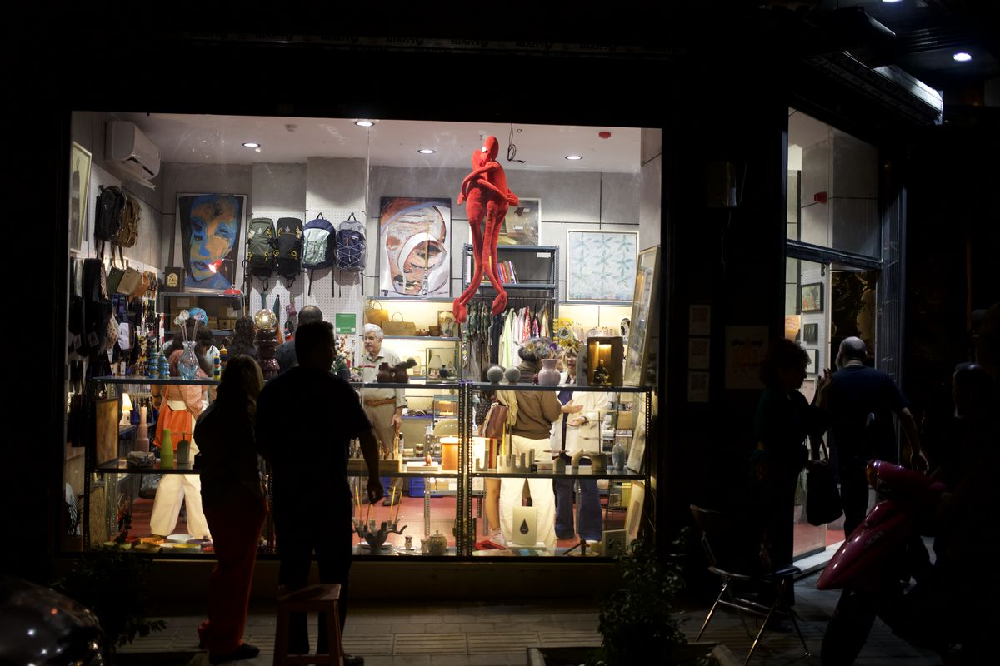
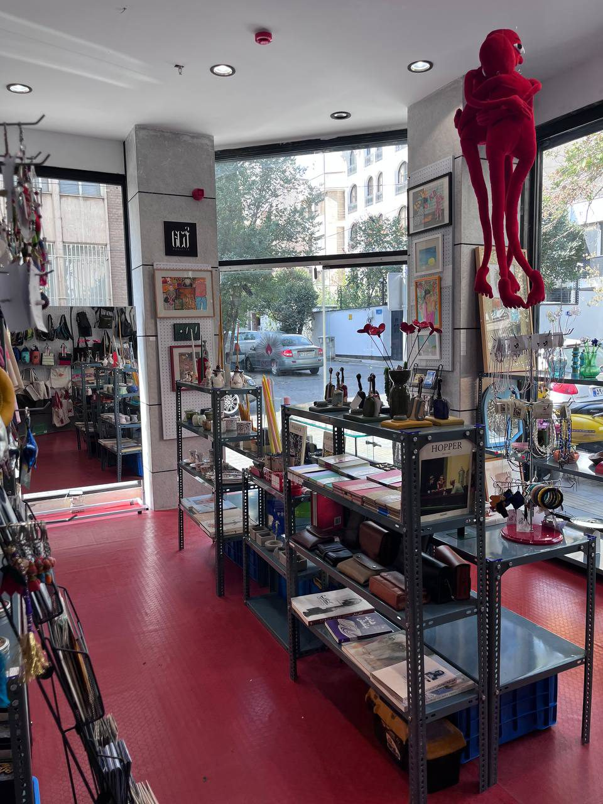

We collect
things that
make us feel.


Made by people, for people. ساختهٔ آدمها، برای آدمها.
Paintings and prints, art books, ceramics, candles, bags, jewelry and small handmade things, all under one roof on Larestan Street.
تابلو و پوستر، کتاب هنری، سرامیک، شمع، کیف، زیورآلات و چیزهای کوچک دستساز؛ همه زیر یک سقف در خیابان لارستان.
Visit سر بزنید
- Address
- No. 15, Larestan St.
at Abdoh & Sarbedaran
off Motahari St., TehranPlus code PCC6+479 Tehran - مطهری، خیابان لارستان،
تقاطع عبده و سربداران،
پلاک ۱۵ - Hours
- Every day, 10:00–22:00
- هر روز، ۱۰ صبح تا ۱۰ شب